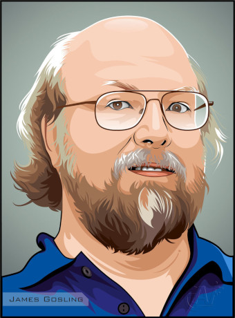
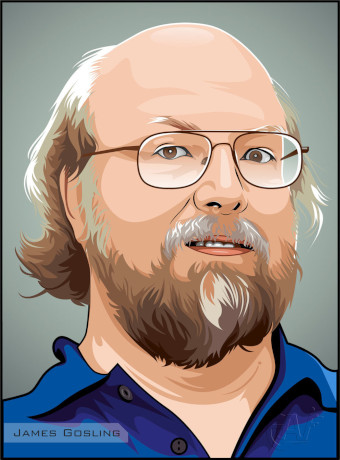

Imágenes JG
¡Quizás nunca hayáis visto una foto del creador de Java, así que os dejamos dos imágenes para que le veáis!
¡Quizás nunca hayáis visto una foto del creador de Java, así que os dejamos dos imágenes para que le veáis!
James recuerda especialmente con cariño sus días como alumno. Merece hasta el último momento escuchar los consejos que nos da.